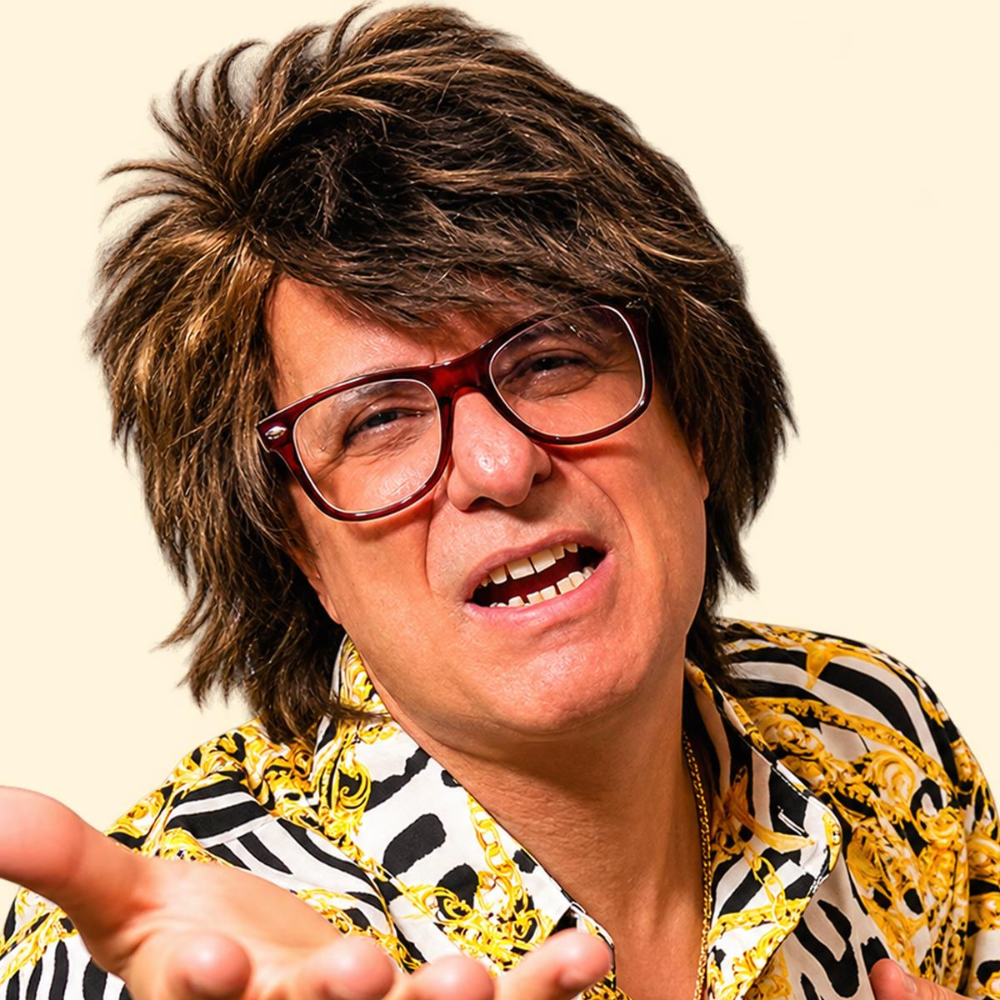

Un buongiorno riservato a te
Oggi la star sei tu.
Hai preso la tazza, hai fatto partire il tuo rituale del mattino. Adesso accomodati: Tony Vesuvio ha preparato un buongiorno tutto per te.
«Oggi abbiamo un ospite veramente speciale... YOU! Yes, sì, proprio proprio tu!»
La tua canzone con Tony
L'orchestra si sta scaldando e Tony sta preparando la sua dedica musicale. Torna qui tra poco: questa pagina è il tuo indirizzo stabile per ascoltarla.
Il caffè è pronto. La canzone arriva a breve.

Solo per
te, my
darling!
te, my
darling!
Quando la canzone sarà pronta, la troverai qui senza cambiare QR code. Intanto, affronta la giornata da protagonista: Tony fa il tifo per te.